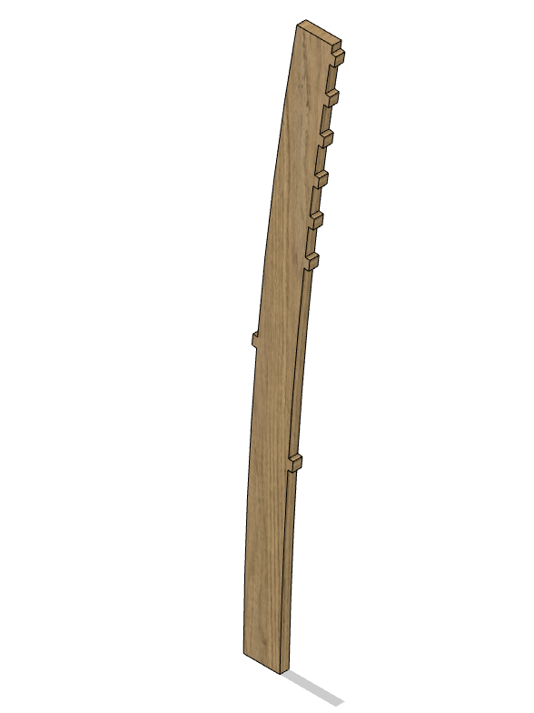
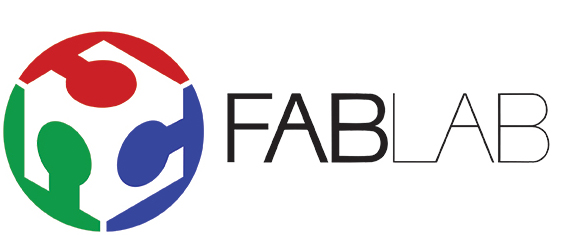
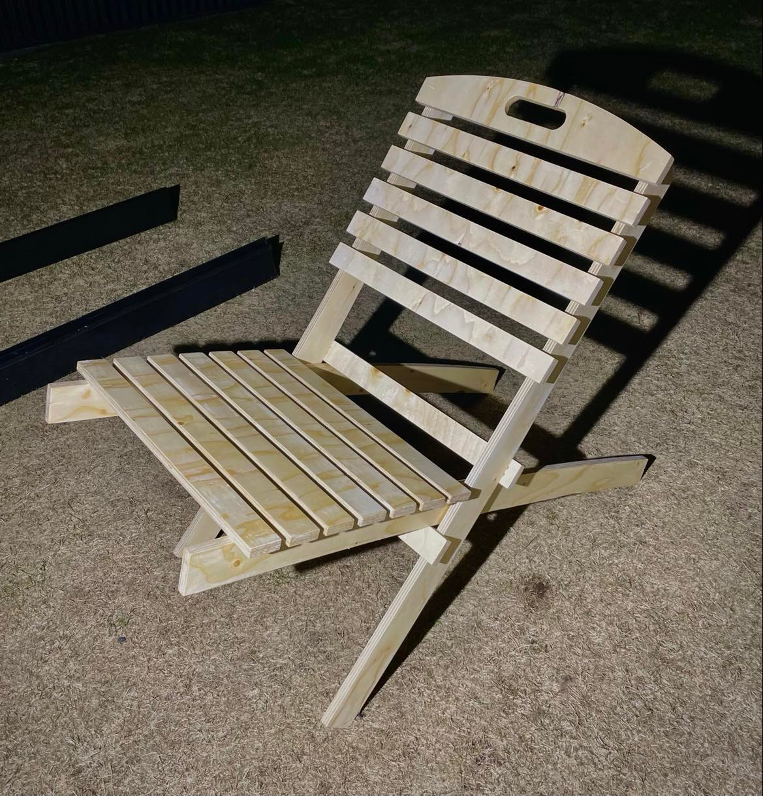

Fræsun á stórum hlut
Hér mun ég segja frá mínu framlagi í lokaverkefninu sem ég, Benedikt og Gunnar gerðum saman. Við ákváðum að fræsa út samanbrjótanlegan garðstól tilbúinn í sumarið. Nánari upplýsingar á þessu verkefni má finna á síðunni hans Benedikts hér.
Verkefnalýsing
Skráðu ítarlega þitt vinnuframlag fyrir þá verkþætti sem þú varst ábyrg/ur fyrir á þína persónulegu vefsíðu.
Tímatafla
| Hvað var gert | Tími [klst] |
|---|---|
| Undirbúningur | 1 |
| Hönnun | 4 |
| VCarve | 4 |
| Fræsun | 4 |
| Samsetning | 9 |
| Skrásetning sameiginlega verkefnisins | 5 |
| Gerð þessarar síðu | 2 |
| Heildarvinnustundir | 29 klst |
Undirbúningur
Við byrjuðum á að hittast saman til að ákveða hvað við ættum að gera. Allir komu með eina hugmynd og gáfum við svo öllum hugmyndunum einkunn. Garðstóllinn fékk hæstu einkunnina og völdum við því hann. Tíminn sem verkþátturinn tók: 1 klstHönnun
Fyrir hönnunina sjálfa þá ákváðum við í sameiningu allar helstu stærðir og skissuðum hlutina upp.
Þegar kom að því að teikna þá í Fusion360 þá sá ég mest um það á meðan Benedikt og Gunnar gerðu verkefnastjórnunina. Flóknasti hluturinn að teikna voru stólfæturnir,
þar sem þeir eru ekki beinir og þurfti að nibburnar þurftu að vera á réttum stöðum, þá sérstaklega neðstu tvær þar sem staðsetning þeirra ákvarðar hæð og halla sætisins.
Hér má sjá mynd af fætinum sem sætisbökin festast við.

Tíminn sem verkþátturinn tók: 4 klst
Fablab
VCarve
Við mættum í Fablab og exportuðum skrá sem innihélt alla þá hluti sem við þurftum sem stl og settum í VCarve. Ég og Benedikt gerðum toolpaths fyrir fræsarann og breyttum skörpum hornum í "Dogbone" joint svo fræsarinn nái að skera þá út. Einnig ákvörðuðum við speed og chip load fyrir fræsibitana. Tíminn sem verkþátturinn tók: 4 klst
Fræsun
Nú var allt tilbúið til þess að fræsa og ég og Gunnar sáum um það. Við skrúfuðum plötuna niður svo hún færi ekki á hreyfingu á meðan fræsarinn er að vinna, stilltum 0 punkt fyrir ásana og settum hann í gang. Fyrst þá létum við fræsa 4 punkta á milli hlutanna og settum skrúfur þangað til að festa plötuna betur. Næst notuðum við downcut bita til að skera 3mm niður fyrir fínni yfirborðsfrágang. Skiptum þeim bita svo út fyrir upcut og fræstum alla leið í gegn. Tíminn sem verkþátturinn tók: 4 klst
Samsetning
Áður en við settum hlutinn saman þá slípuðum við hann og lökkuðum bæði til að stóllinn lýti betur út, sem og að veðurverja hann. Þegar lakkið var þornað límdum við stólinn saman. hér má svo sjá mynd af stólnum.  Tíminn sem verkþátturinn tók: 9 klst
Skrásetning
Í sameiginlegu vinnudagbókina skrifaði ég um Fusion360 hlutann, fræsunina og samsetninguna. Ég gerði svo einblöðunginn og setti myndbandið saman. Ég og Gunnar gerðum svo kynninguna saman. Tíminn sem verkþátturinn tók: 5 klst
Lokaorð
Ég er mjög ánægður hvernig tókst til í þessu verkefni, stóllinn lýtur vel út og hópavinnan hjá mér, Benedikt og Gunnari gekk eins og í sögu. Allir lögðu sitt að mörkum til að þetta verkefni yrði eins flott og mögulegt væri. Eins og kemur fram efst þá má nálgast frekari upplýsingar um þetta verkefni á síðunni hans Benedikts hér.